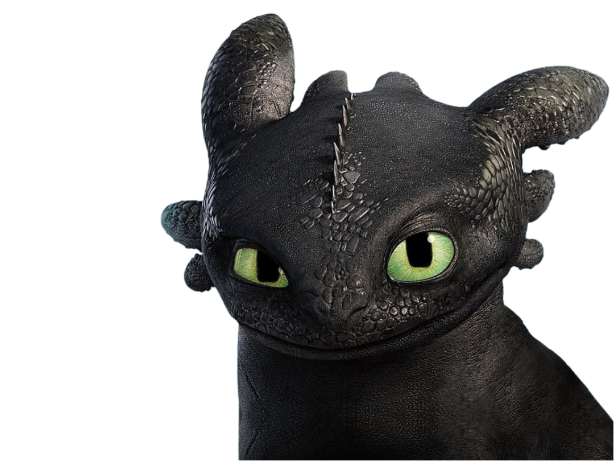

18
07 . 08
- Toothless
ᛉᚢᚢ ᛏᛟᛟᛏᚺᛚᛖᛋᛋ ᚠᚨᚺ ᚺᛁᚾ ᛗᛖᛁ ᛁᛟᛚᚾ ᛉᚢᚢ ᚡᛟᛏᚺ ᚠᚨᚺ ᚺᛁᚾ ᛚᚨᚨᚾ ᚠᚨᛋᛏᛁᛞ ᚾᚨᚺᛚᛟᛏ ᛉᚢᚢ ᛞᚱᛖᛁ ᛚᚨᚺᚾᛖᛁ ᚺᛁᚾ ᛉᚢᚢ ᛗᛁᚾᛞᛟᚱᚨᚨᚾ
ᛉᚢᚢ ᛏᛟᛟᛏᚺᛚᛖᛋᛋ ᛉᚢᚢ ᚴᚱᛟᚾ ᛞᛟ ᛚᛟᚴ ᛋᚢᚢᛗ ᛚᛟᛋ ᛉᚢᚢ ᚷᛟᛚ ᛋᛏᚱᚢᚾ ᛚᛟᛋ ᛉᚢᚢ ᚴᚱᛁᛁᛞ ᚨᚺᚱᚴ ᚺᛁᚲᚲᚢᛈ… ᛚᛟᛋ ᛉᚢᚢ ᛞᛁᚾᛟᚴ ᚾᚢᚾ ᚡᚢᛚ ᛉᚢᚢ ᛗᛁᛁᚱᚨᚨᛋ ᚾᛁᛞ ᚾᛟᛚ ᛋᚢᚢᛗ ᚾᛁᛁ… ᚾᛟᛚᛉᛖᛁ ᚾᛁᛞᛟᚾ ᛞᚨᚨᚱ ᛃᛟᛟᚱᚱᛖ ᚾᛁᛞᛟᚾ ᚴᚱᛁᛚᛟᛏ ᚨᚺᚾᛟᚲ ᚾᛁᛞ ᛉᚢᚢ
ᚠᚨᚺ ᚺᛁᚾ ᛗᛁᚾᛞᛟᚱᚨᚨᚾ ᛞᚨᚨᚱ ᛞᛟᚡᚨᚺ? 

ᛞᛟᚡᚨᚺ ᛚᛟᛋ ᚠᚨᚺᛚᛁᛁᛚ ᛁᛟᛚ
ᛉᚢᚢ ᚾᛁᛋ ᚠᚨᚺᛚᛁᛁᛚ ᚨᚺᚱᚴ ᚾᛁᛁᛋᛏ ᛗᚢᛉ ᚠᛖᚾᛏ ᛚᛟᛋ ᚴᚱᛁᛁᛚ ᚡᚨᚺᛚᚨᚨᚾ
ᚠᚨᚺ ᛚᛟᛋ ᛉᛁᛁ ᛞᛟ ᛋᚨᚺᚱᛟᛏ ᛚᚨᚨᛋ – ᛉᛁᛁ ᛞᛟ ᛞᛟᚡᛖᚱᚨᚨᚾ
(ᛞᛁᛁ ᛗᚢᛉ ᚠᛖᚾᛏ ᛗᛁᛁᚱᚨᚨᛋ ᚾᛁᛁ ᚡᛖᚾ ᛉᚢᚢ ᛒᛟ, ᚨᚺᚱᚴ ᛉᚢᚢ ᚠᚨᚺᛚᛁᛁᛚ ᛞᛟ ᛞᛟᚡᚨᚨᛉ ᚠᛖᚱᛚ ᚾᛁᛁ ᚹᚨᚺᛚᚨᚨᚾ)
ᚡᚨᚺᛉᚨᚺ ᛋᚨᚺᚱᛟᛏ ᛋᚨᚺᚱᛟᛏ ᚾᛁᛁᛞ ᚹᚨᚺᛚᚨᚨᚾ ᚠᛖᚾ ᛋᚨᚺᚱᛟᛏ ᛚᛟᛋ ᛞᛟ ᚾᚢᛉ ᛉᚢᚢ ᚾᛁᛞ ᛗᛁᚾᛞᛟᚱᚨᚨᚾ ᚨᚺᚱᚴ ᚴᚱᛁᛁᛚ ᛚᛟᛋ ᚨᚺᚱᚴ ᚴᚱᚨᚺ ᛞᛟ ᛚᛟᚲ
ᛉᚢᚢ ᛈᚨᚺ ᛞᛟ ᛃᛟᛟᚱᚱᛖ ᚴᛟᛋ ᚹᚨᚺ ᚾᛟᚲ ᚨᚺᚱᚴ ᛞᛟ ᚠᛖᚾᛏ ᚾᚢᛉ ᚨᚺᚱᚴ ᚷᛖᛁᚾ ᚾᚢᛉ ᛚᛟᛋ ᚡᛁᛁᚾᚷ ᚾᛁᛞ... ᚾᚢᛉ ᛚᛟᛋ ᚾᛁᛞ ᚾᚢᛉ ᛚᛟᛋ ᛏᛟᛚ ᛞᛟ ᚠᛁᚾᚱᚨᚺ
ᚾᚢᛉ ᚱᛖᛗᛖᚤᚨᚨᛋ ᛉᚢᚢ ᚹᚨᚺ ᛞᛟᚡᚨᚨᛉ ᛚᛟᛋ ᚾᛁᛞ ᚴᛟᛋ ᛞᛟᚡᚨᚨᛉ ᛚᛟᛋ ᚾᛁᛞ ᚴᚱᛁᛁᛞ ᛞᛟᚡᚨᚨᛉ ᛚᛟᛋ ᛋᚢᚢᛗ ᛚᛟᛋ ᛗᛁᛁᚱᚨᚨᛞ ᛞᛟ ᛚᛟᚴ ᚨᚺᚱᚴ ᚡᛟᛉᛁᛁᚴ ᛞᛟ ᚾᚨᚺᛚᚨᚨᛋ!
ᚾᚢᛉ ᛚᛟᛋ ᛋᚨᚺᚱᛟᛏ ᚴᚱᛟᚾᛁᛁᚱ ᛉᚢᚢ ᛞᛟᛃᚢᚾ ᚴᚱᛟᚾᛁᛁᚱ ᛉᚢᚢ ᚾᚢᛉ ᛚᛟᛋ ᚾᚨᚢ ᚴᚱᛟᚾᛁᛁᚱ ᚾᚢᛉ ᛚᚨᚺᚾᛖᛁ ᚡᛖᚾ ᛋᚢᚢᛗ ᛞᛟ ᚡᚨᚺᛚᛟᚲ ᚴᚱᛁᛁᛚ ᚨᚺᚱᚴ ᚠᚨᚺᛞᛟᚾ ᚠᛖᚾ ᛗᛖᛃᛉ ᚾᛁᛁᛞ ᚴᚱᛁᛚᚨᚨᚾ ᛞᛟ ᚴᚱᛁᛚᛟᛏ ᚨᚺᚱᚴ ᚴᛟᛞᚨᚨᚡ ᚹᚨᚺ ᛗᛖᛃ ᚾᚢᛉ
ᛉᚢᚢ ᚾᛁᛞ ᛗᛁᚾᛞᛟᚱᚨᚨᚾ ᛚᚨᚨᛋ ᛉᚢᚢ ᚾᛁᛞ ᛗᛁᚾᛞᛟᚱᚨᚨᚾ ᚠᛖᚾ ᚴᛟᛋ ᛚᛟᛋ ᛉᚢᚢ ᚾᛁᛞ ᛗᛁᚾᛞᛟᚱᚨᚨᚾ ᚠᛖᚾ ᛚᛟᛋ ᛋᚢᚢᛗ ᚨᚺᚱᚴ ᛉᚢᚢ ᚾᛁᛞ ᛗᛁᚾᛞᛟᚱᚨᚨᚾ ᚠᛖᚾ ᛚᚨᚺᚢ ᚾᛁᛞ ᚠᛖᚾ ᛞᛟ ᚾᛁᛞ ᚡᛟᚦ ᚨᚺᚱᚴ ᛏᚨᚨᛚ (ᛞᛁᛁ ᛗᚢᛉ ᛚᛟᛋ ᚠᚨᚨᛚ ᚾᛟ ᛚᛟᛋ ᚨᚺᚱᚴ ᚴᛟᛋ ᛞᛟ ᚡᛖᚾ ᚴᛟᛋ 10 ᛗᛁᚾᚢᛏ)
ᚨᚺᚱᚴ ᛉᚢᚢ ᛗᛁᚾᛞᛟᚱᚨᚨᚾ ᛚᚨᚨᛋ ᛚᛟᛋ ᛚᚨᚨᛋ ᚾᛁᛞ ᚠᛖᚾ ᚷᛖᛁᚾ ᛚᛟᛋ ᛚᚨᚨᛋ ᚡᛟᚦ ᛈᚨᚺ ᚨᚺᚱᚴ ᚴᛟᛋ ᛚᛟᛋ... ᛟᚺᚺ ᚤᛟᛚ ᛚᛟᛋ ᚡᛟᚦ ᚠᛁᛁᚾ ᛞᛟᚡᚨᚺ ᛚᚨᚨᛋ ᚹᚨᚺ ᚾᛁᛞ... ᚾᛁᛞ ᚾᛁᛞ ᚾᛁᛞ
ᛚᛟᛋ "ᚴᚱᛁᛁᛚ ᚠᛁᛁᚾ ᛚᚨᚨᛋ!"
- Hiccup
Okay, I understand, let me translate what toothless said.
( klick to translate )
- Toothless
Hi, im Toothless, the Night Fury. I'm sure you know about me and all my adventures. However, I want to tell you something you may not know.
Im Toothless. I live in the sky. The wind is my home. The lightning is my toy. And Hiccup… he is my family. That day, I smelled something strange in the air. Something… new. Not like humans. Not enemies. But not like me either.
So, You know this dragon?
Yep, its Light Fury!, I'm not sure, but, it seems like she has a light that radiates because she has great power, the power of cheerfulness. ( at least that's what I feel when I'm near her, and I'm sure other dragons feel it too )
strange power, that power kept radiating, as if that power was part of him, I don't know exactly, but that light exceeded the light of the sky.
I'm afraid evil humans will hunt and capture him, and make him a weapon, no... he's not, he's a symbol of freedom.
He reminded me that, dragons are not pets, dragons are not weapons, dragons are free creatures—guardians of the sky, and explorers of the world!
he's stronger than me, faster than me, he's also more agile than me, he can disappear in the air by manipulating the light and fog around him, making himself almost invisible to enemies or anyone who sees him.
By the way..... I don't know what day it is, I don't know how long I've been alive, I don't know how long I've been flying in the air, and I don't know when was the last time I ate delicious food🐟. (even though I just ate fresh fish from the sea 10 minutes ago),
but I know, today is a day that can't be missed, a special day, but what is it?...OHH YES, IT'S WHITE DRAGON DAY, oh no...no no no,
ITS "LIGHT FURY DAY!"
- Hiccup
That's what he want to said, he wanted to say "birthday" to
light fury.
looks like toothless has
a message for you

" I don't want to miss this wonderful journey, the journey I've been waiting for, the
journey that I missed before, so let me spread my wings, I promise not to disturb your
territory, I just want
to feel my wings fluttering after so long.
I hope the world always gives you the source of cheerfulness that you always spread, and I
hope you don't use that great power to hide something, something who you truly are. "